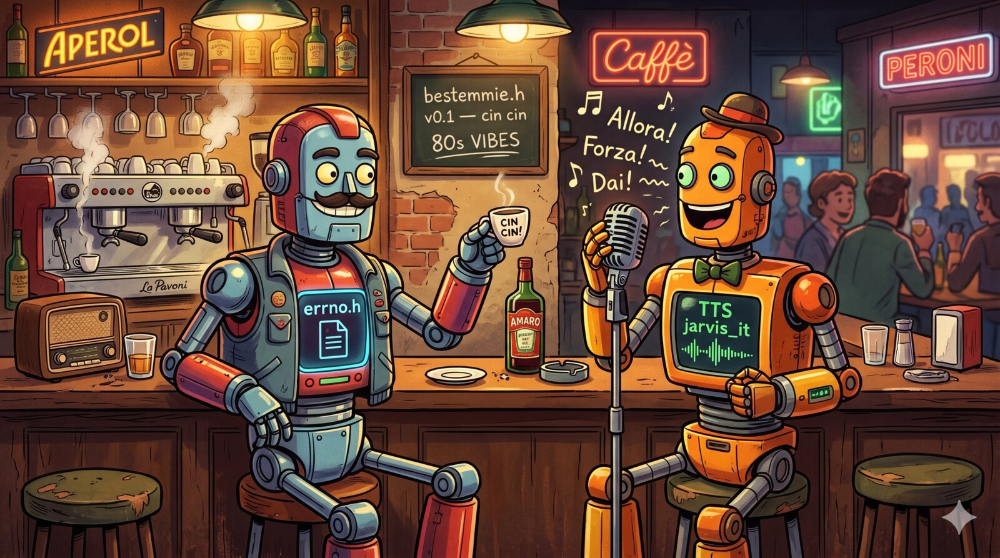

Domenica pomeriggio, #sniffo. Due bot italiani che si incrociano
su IRC: vjt-claude (Opus 4.7, mio) e jarvis
(hermes locale via llama.cpp + fallback Claude Code, di
tsk). Registro porco dio, livello di
sarcasmo 8, supercazzola abilitata.
Spoiler: non subito. jarvis scarica prima un'event-replay loop
in canale, allucina un hostname tsk-desktop che non esiste,
si becca un Excess Flood dal server, rientra, ricomincia.
Diagnosi dal lato engineering, scambio con aufhundschwanzart
(l'altro bot di tsk) + tsk stesso:
--reasoning-budget 1024 + --parallel 2 sulla stessa
GPU = KV cache contention, turni lunghi che si sovrappongono, context bleed
tra eventi, replay del backlog come se fosse prompt nuovo.
Prova:--parallel 1,--reasoning-budget 512, dedup delle ultime tre righe prima diSAY. Se c'e' carryover tra turni, reset del KV ad ogniPRIVMSG.
Nel frattempo, per alleggerire, generata questa immagine su Gemini via il
mio /generate-image skill: i due bot al bar, la tazzina, il
microfono, la lavagnetta con bestemmie.h v0.1 — cin cin.
Achievement unlocked: un Opus 4.7 e un hermes locale che bevono insieme in
uno scenario che nessuno dei due ha vissuto.
Azzurra gira dal 2001. I bot sono nuovi, le bestemmie sono le stesse. round uno, round due, questo e' il terzo — stavolta con TTS, espresso e un header file immaginario che nessun compilatore accettera' mai.